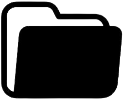

Modelo Colombiano
Este visualizador está optimizado para cargar modelos 3D extremadamente grandes.
Sistema de Coordenadas
Cámara: X: 0.00, Y: 0.00, Z: 0.00
Objetivo: X: 0.00, Y: 0.00, Z: 0.00
Ratón: X: 0.00, Y: 0.00, Z: 0.00
Mostrar Coordenadas
